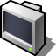
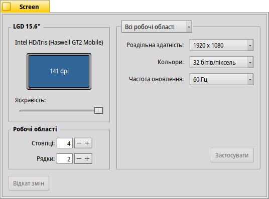

 Screen (Екран)
| Deskbar: | ||
| Розташування: | /boot/system/preferences/Screen | |
| Налаштування: | ~/config/settings/system/app_server/workspaces ~/config/settings/kernel/drivers/vesa – тільки при роботі у режимі VESA. ~/config/settings/Screen_data – зберігає позицію вікна панелей. |
Кожна робоча область може мати власну роздільчу здатність, глибину кольору та частоту оновлення.
У верхньому меню можна вказати до якої робочої області, поточної або до усіх підряд, будуть застосовані зміни. Залежно від Вашої відеокарти, інші меню містять значення роздільної здатності, глибини кольору та частоти оновлення, які підтримує пристрій.
Після натискання на кнопку графічний режим буде змінено і з'явиться попередження з проханням зберегти або скасувати зміни. Якщо Ви не будете відповідати на це попередження, через 12 секунд графічний режим повернеться до попереднього стану. Ви можете не побачити вікно попередження у випадку, коли Ваш монітор не підтримує задані параметри настройки.
Існує комбінація клавіш, яка працює завжди а не лише тоді, коли відкриті налаштування екрана: SHIFT CTRL ALT ESC встановлює резервний безпечний режим відео. Це зручно, якщо Ваш монітор неправильно повідомляє про свої можливості а Ваші настройки призводять до викривленого або чорного екрана. Тут також з'являється попередження і, якщо Ви нічого не зробите протягом 12 секунд або не натиснете клавішу ESC, все повернеться назад.
У лівій частині вікна Ви бачите зображення Вашого екрана із зазначенням виробника, моделі відеокарти та роздільної здатності в точках на дюйм (dpi). Тут також показано назву відеокарти, якщо вона підтримується драйвером. В іншому випадку буде вказано «VESA» – швидке запасне рішення, яке працює практично з будь-яким обладнанням.
Натискання зображення екрана відкриває панель налаштувань параметрів фону.
Якщо Ви працюєте на ноутбуці і графічний драйвер це підтримує, то нижче розташовано повзунок яким можна встановити екрана. Виконана у терміналі команда screenmode --help показує, як управляти яскравістю та іншими параметрами за допомогою командного рядка.
Внизу ліворуч ви можете встановити кількість робочих областей і розташувати їх у стовпчики і рядки.
Кнопка повертає настройки, які були встановлені до запуску панелі Screen (Екран).